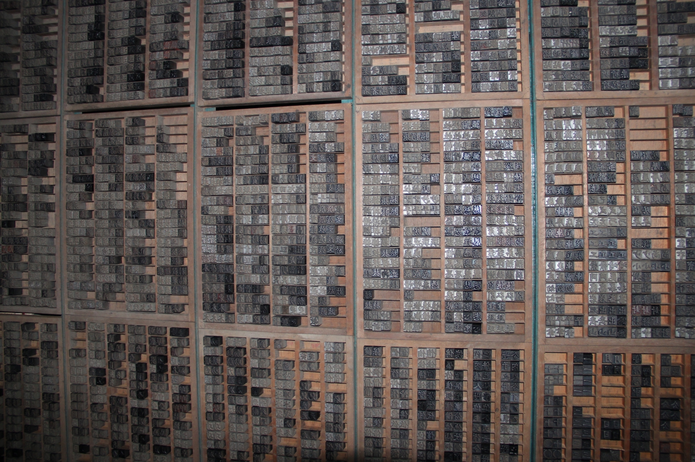
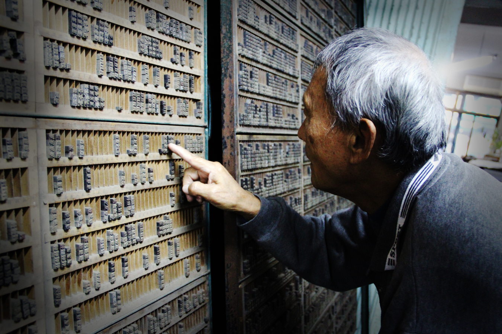
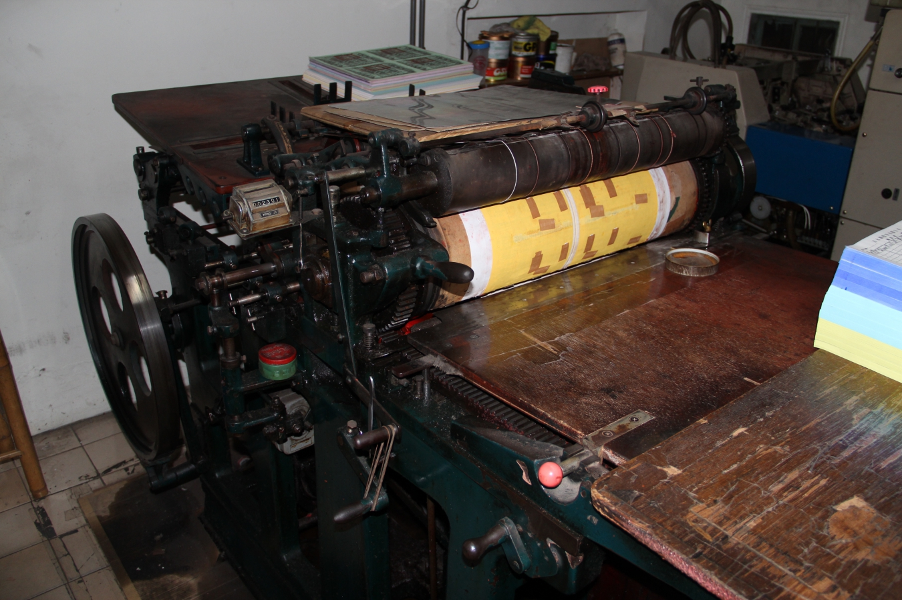

「喀拉喀拉」的齒輪傳動聲
是活字印刷時的響聲
曾經作為號角聲 帶動著文化前進
規律的金屬敲擊聲
陳日新老先生阿龍打鐵舖
興城街現存唯一真正的「打鐵」店鋪
轟隆隆的炮竹響徹雲霄
這是廟會不可或缺的呎炮習俗
炮聲、火光、灰煙
呎炮承載著信徒的記憶
此起彼落的鐘聲
構成美妙的交響曲
每天都在台南後壁
滄海一聲海螺響
村內的罟仔腳們魚貫而出
赤腳踏浪 吆喝著 期待豐收
小時候每到放學傍晚
「燒～肉粽～～」
中氣十足的召喚聲總隨著香氣傳遍大家小巷
「逼─逼─逼─」熟悉的氣笛聲在清晨響起
這是比公雞還早起的麵茶攤氣笛
好似燒開水的熱水壺
麵茶攤的聲響總能穿越鄰里
五分車是台糖運送蔗糖的小火車
軌距僅有一般鐵路的一半而得名
五分車走過台灣南部田野
伴隨著蔗田、稻田與香蕉樹
「魚仔八十八十八十、百五百五百五...」
黎明時分 叫賣聲像是一齣脫口秀
在漁港旁的市場 激烈的上演著
走訪台北城南常聽到一聲嚇人的巨響
這是爆米香的獨特聲音
「砰!」氣爆聲過後
空氣中便瀰漫濃濃的米香

進入老舊的倉庫
尾隨著固定頻率的聲聲震響
把長長一串紅鞭炮平躺
一間乍看不甚起眼的鐘表行
牽罟以風平浪靜的三月到十月間為主
老闆熟練地抓起麵茶粉
雲林的虎尾糖廠
作為買家和賣家間的仲介
進入老舊的倉庫
映入眼簾的是一幅巨型的「字畫」
老師傅迅速找到我們所說的字
驚嘆之餘看到在溝槽中零落的字
意味著這些聲音或許已被時代遺忘
尾隨著固定頻率的聲聲震響
找到了這最傳統的打鐵舖
只一名身形消瘦的老先生
重複著同樣卻又有些微差距的動作
只為在一次次微調讓鑽頭更完美
把長長一串紅鞭炮平躺
橫亙在馬路間、神轎下
在人群中倏地炸開
聲響劃過天際、留下深深印記
一間乍看不甚起眼的鐘表行
牆上掛滿早期的鐘擺掛鐘
每到整點，隨著第一聲鐘響
就可以聽到機械敲打銅條的協奏曲
牽罟以風平浪靜的三月到十月間為主
於漲潮時用漁筏將漁網帶到海中投放
退潮時魚群陷落於網內
在牽罟捕魚的日子
各罟槽的負責人會到漁場等候
等魚群出現時 就立刻吹「罟螺」招集罟仔腳來牽罟捕魚。
載著熱騰騰肉粽的小機車
後面總跟著一群興奮的孩童
那是一種簡單知足的快樂
老闆熟練地抓起麵茶粉
撒上芝麻、佐上麻醬與花椒
倒入滾燙熱水
剎那間煙霧迷漫、香味撲鼻
雲林的虎尾糖廠
留存著全台僅存仍在使用的五分車
獨特的車體設計、運行聲與鳴笛
是屬於所有糖廠人的回憶
作為買家和賣家間的仲介
「糶(ㄊㄧㄠˋ)手」
往往是老闆是否能獲利、顧客是否能划算的主因
須掌握漁貨的重量及品質，天氣、節日、漁獲量等各種因素
即便是現在，也僅止於磅秤的使用來避免爭端
爆米香是台灣傳統的點心
更是東方的爆米花
記錄著台灣巷口文化的變遷

在沒有電腦的年代
打鐵是大量體力流失的工作
廟會是台灣庶民文化中最重要的一環
日據時代的台灣壁鐘
作業時，由幾人乘罟仔船載罟網出海環繞半圈
賣肉粽的阿伯打開熱騰騰的蒸籠
端著一碗糊糊香香的麵茶
深夜的叫賣、加上手提至少三十台斤以上漁貨
爆米香是以稻米為主材
在沒有電腦的年代
印刷不是件人人可以做的事
專業的印刷店裡有兩三具活字印刷機
不停地反覆印製表格、帖子
光是聲音就很熱鬧了
打鐵是大量體力流失的工作
待在高溫的火爐旁，長期吸進燒後的廢氣
讓打鐵師傅經常有肺病，而腰部也不堪重負
在今日更是無人承接此類苦勞
廟會是台灣庶民文化中最重要的一環
傳統的嗩吶、南北管樂器演奏出獨特的弦律
道教文化中的神祉與習俗
是台灣最豐富多元的文化盛宴
日據時代的台灣壁鐘
逾三百年歷史的英、法古鐘
這裡有著各式各樣的鐘
這些全都是老闆殷瑞祥的寶貝
作業時，由幾人乘罟仔船載罟網出海環繞半圈
順序下網後 船再開回岸邊
由一人入水牽網繩的另一端上岸後
「罟腳」們排成兩排合力拖拉網繩的二端
賣肉粽的阿伯打開熱騰騰的蒸籠
眾人的期待化為笑靨
蒸氣由籠內竄出
讓肉粽多了點神祕美
端著一碗糊糊香香的麵茶
遠方的天空泛起魚肚白
熱氣逼走陣陣寒意
讓人肚子和心都暖暖的
從日治時代至今
五分車的軌道彎彎長長
在台灣的土地上留下甜甜的一條線
深夜的叫賣、加上手提至少三十台斤以上漁貨
糶手工作之吃力可想而知
聲音之餘，糶手的手勢、記帳員使用的傳統代碼
更是隱藏著漁市這個環境吸引人的地方
爆米香是以稻米為主材
放入壓力爐加熱加壓
打開爐前的一句閩南話
「要爆阿!」
伴隨著壓力釋放的轟然巨響

規律的齒輪轉動聲 跟不上時代的齒輪速度
「牽罟」是先人篳路藍縷與自然共存的回憶
終於香氣散去
走在鐵路上、揹著一把木吉他